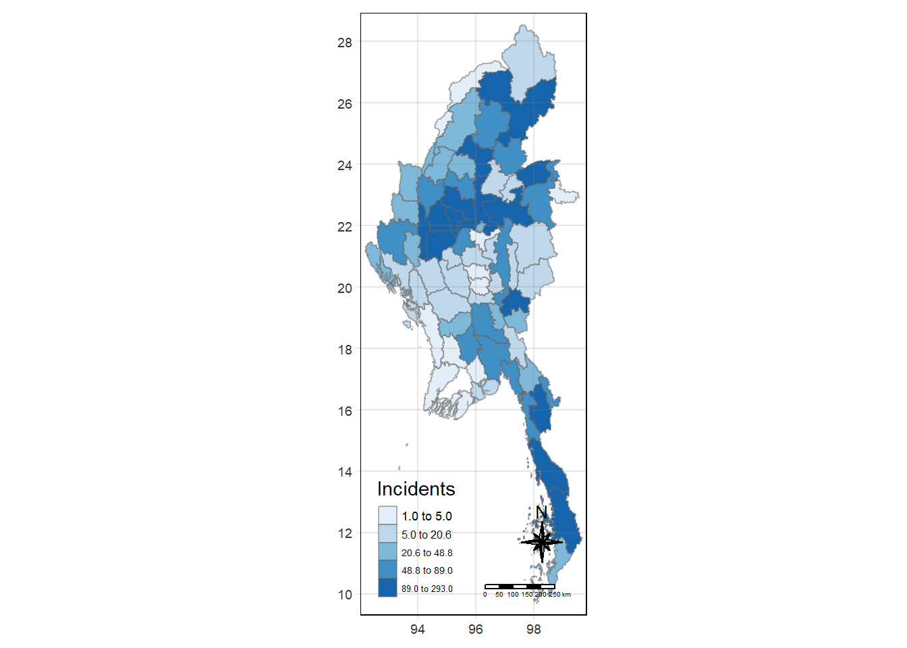
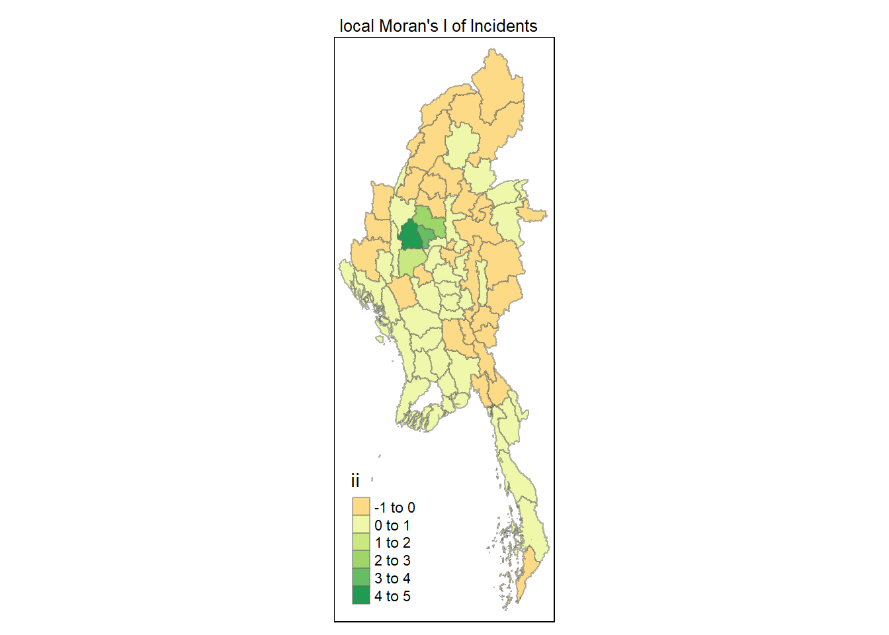
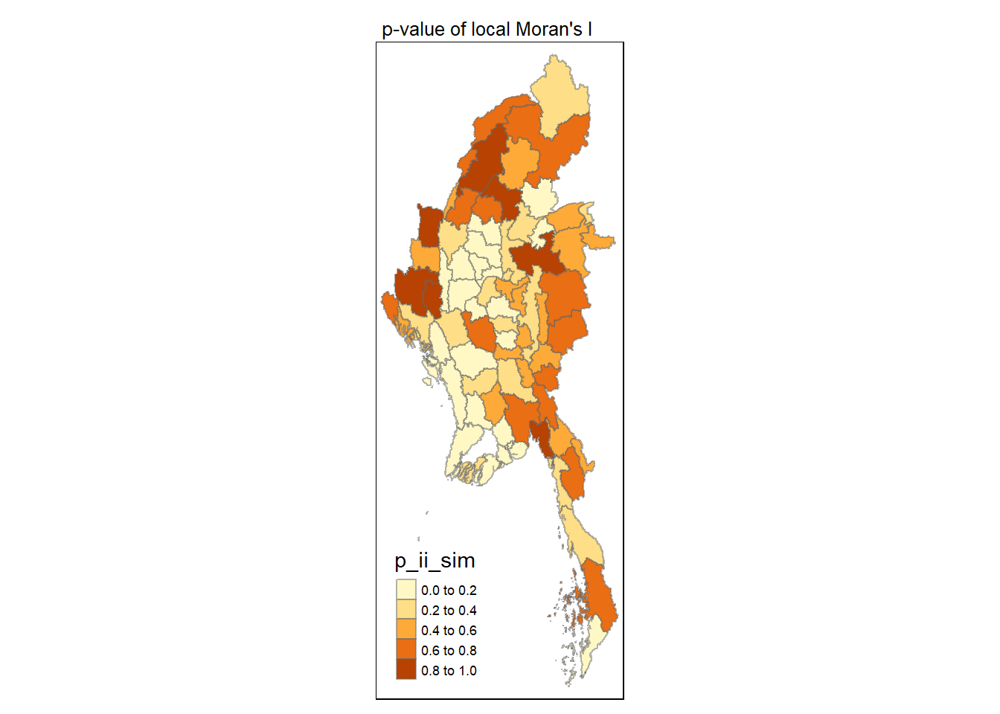
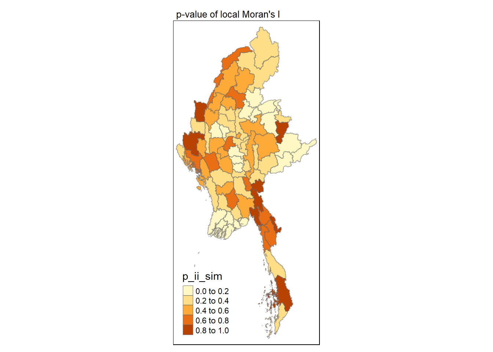

pacman::p_load(tidyverse, dplyr ,
sf, lubridate,plotly,
tmap, spdep, sfdep)Take-home Exercise 1b
Getting Started
Loading R packages and Data prep
ACLED_MMR <- read_csv("data/MMR.csv")mmr_shp_mimu_2 <- st_read(dsn = "data/geospatial3",
layer = "mmr_polbnda_adm2_250k_mimu")Reading layer `mmr_polbnda_adm2_250k_mimu' from data source
`C:\imranmi\ISSS608-VAA\Take-home-ex\Take-home-Ex1b\data\geospatial3'
using driver `ESRI Shapefile'
Simple feature collection with 80 features and 7 fields
Geometry type: MULTIPOLYGON
Dimension: XY
Bounding box: xmin: 92.1721 ymin: 9.696844 xmax: 101.17 ymax: 28.54554
Geodetic CRS: WGS 84mmr_shp_mimu_1 <- st_read(dsn = "data/geospatial3",
layer = "mmr_polbnda2_adm1_250k_mimu_1")Reading layer `mmr_polbnda2_adm1_250k_mimu_1' from data source
`C:\imranmi\ISSS608-VAA\Take-home-ex\Take-home-Ex1b\data\geospatial3'
using driver `ESRI Shapefile'
Simple feature collection with 18 features and 6 fields
Geometry type: MULTIPOLYGON
Dimension: XY
Bounding box: xmin: 92.1721 ymin: 9.696844 xmax: 101.17 ymax: 28.54554
Geodetic CRS: WGS 84ACLED_MMR_1 <- ACLED_MMR %>%
mutate(admin1 = case_when(
admin1 == "Bago-East" ~ "Bago (East)",
admin1 == "Bago-West" ~ "Bago (West)",
admin1 == "Shan-North" ~ "Shan (North)",
admin1 == "Shan-South" ~ "Shan (South)",
admin1 == "Shan-East" ~ "Shan (East)",
TRUE ~ as.character(admin1)
))ACLED_MMR_1 <- ACLED_MMR_1 %>%
mutate(admin2 = case_when(
admin2 == "Yangon-East" ~ "Yangon (East)",
admin2 == "Yangon-West" ~ "Yangon (West)",
admin2 == "Yangon-North" ~ "Yangon (North)",
admin2 == "Yangon-South" ~ "Yangon (South)",
admin2 == "Mong Pawk (Wa SAD)" ~ "Tachileik",
admin2 == "Nay Pyi Taw" ~ "Det Khi Na",
admin2 == "Yangon" ~ "Yangon (West)",
TRUE ~ as.character(admin2)
))Events2 <- ACLED_MMR_1 %>%
group_by(year, admin2, event_type) %>%
summarise(Incidents = n(),
Fatalities = sum(fatalities, na.rm = TRUE)) %>%
ungroup()Events_admin2 <- left_join(mmr_shp_mimu_2, Events2,
by = c("DT" = "admin2"))Events_admin2 <- Events_admin2 %>%
select(-OBJECTID, -ST, -ST_PCODE,
-DT_PCODE, -DT_MMR, -PCode_V)class(Events_admin2)[1] "sf" "data.frame"Filtering the Event and Year (Event type = Battles, in 2022)
Battles_2022 <- Events_admin2 %>%
filter(year == 2015, event_type == "Battles")Local Measures of Spatial Autocorrelation - sfdep methods
tmap_mode("plot")
tm_shape(Battles_2022) +
tm_fill("Incidents",
style = "quantile",
palette = "Blues",
title = "Incidents") +
tm_borders(alpha = 0.5) +
tm_compass(type="8star", size = 2) +
tm_scale_bar() +
tm_grid(alpha =0.2)
Global Measures of Spatial Association
#wm_q <- poly2nb(Battles_2022,
#queen=TRUE)
#summary(wm_q)Deriving contiguity weights: Queen’s method
In the code chunk below, queen method is used to derive the contiguity weights.
wm_q <- Battles_2022 %>%
mutate(nb = st_contiguity(geometry),
wt = st_weights(nb,
style = "W"),
.before = 1) Notice that st_weights() provides 3 arguments, they are:
nb: A neighbor list object as created by
st_neighbours().style: Default “W” for row standardized weights. This value can also be “B”, “C”, “U”, “minmax”, and “S”. B is the basic binary coding, W is row standardised (sums over all links to n), C is globally standardised (sums over all links to n), U is equal to C divided by the number of neighbours (sums over all links to unity), while S is the variance-stabilizing coding scheme proposed by Tiefelsdorf et al. 1999, p. 167-168 (sums over all links to n).
allow_zero: If TRUE, assigns zero as lagged value to zone without neighbors.
wm_qSimple feature collection with 23 features and 7 fields
Geometry type: MULTIPOLYGON
Dimension: XY
Bounding box: xmin: 92.1721 ymin: 15.22063 xmax: 100.2381 ymax: 28.54554
Geodetic CRS: WGS 84
First 10 features:
nb wt DT year event_type
1 10, 11 0.5, 0.5 Matupi 2015 Battles
2 3, 4, 18, 19, 20 0.2, 0.2, 0.2, 0.2, 0.2 Bhamo 2015 Battles
3 2, 4, 12 0.3333333, 0.3333333, 0.3333333 Mohnyin 2015 Battles
4 2, 3, 5, 12 0.25, 0.25, 0.25, 0.25 Myitkyina 2015 Battles
5 4 1 Puta-O 2015 Battles
6 7, 8, 9 0.3333333, 0.3333333, 0.3333333 Hpa-An 2015 Battles
7 6 1 Hpapun 2015 Battles
8 6, 9 0.5, 0.5 Kawkareik 2015 Battles
9 6, 8 0.5, 0.5 Myawaddy 2015 Battles
10 1, 11 0.5, 0.5 Maungdaw 2015 Battles
Incidents Fatalities geometry
1 6 4 MULTIPOLYGON (((93.3546 22....
2 57 15 MULTIPOLYGON (((97.19794 24...
3 52 39 MULTIPOLYGON (((96.25322 26...
4 14 45 MULTIPOLYGON (((97.10253 27...
5 18 3 MULTIPOLYGON (((97.59674 28...
6 1 0 MULTIPOLYGON (((97.81508 16...
7 3 1 MULTIPOLYGON (((97.07254 18...
8 21 10 MULTIPOLYGON (((98.21795 16...
9 1 0 MULTIPOLYGON (((98.31221 17...
10 2 0 MULTIPOLYGON (((92.26664 21...Computing Global Moran’ I
In the code chunk below, global_moran() function is used to compute the Moran’s I value. Different from spdep package, the output is a tibble data.frame.
moranI <- global_moran(wm_q$Incidents,
wm_q$nb,
wm_q$wt)
glimpse(moranI)List of 2
$ I: num 0.404
$ K: num 6.44Performing Global Moran’sI test
In general, Moran’s I test will be performed instead of just computing the Moran’s I statistics. With sfdep package, Moran’s I test can be performed by using global_moran_test() as shown in the code chunk below.
global_moran_test(wm_q$Incidents,
wm_q$nb,
wm_q$wt)
Moran I test under randomisation
data: x
weights: listw
Moran I statistic standard deviate = 2.941, p-value = 0.001636
alternative hypothesis: greater
sample estimates:
Moran I statistic Expectation Variance
0.40417623 -0.04545455 0.02337373 Performing Global Moran’I permutation test
In practice, monte carlo simulation should be used to perform the statistical test. For sfdep, it is supported by global_moran_perm()
It is alway a good practice to use set.seed() before performing simulation. This is to ensure that the computation is reproducible.
set.seed(1234)Next, global_moran_perm() is used to perform Monte Carlo simulation.
global_moran_perm(wm_q$Incidents,
wm_q$nb,
wm_q$wt,
nsim = 99)
Monte-Carlo simulation of Moran I
data: x
weights: listw
number of simulations + 1: 100
statistic = 0.40418, observed rank = 99, p-value = 0.02
alternative hypothesis: two.sidedThe statistical report above show that the p-value is smaller than alpha value of 0.05. Hence, we have enough statistical evidence to reject the null hypothesis that the spatial distribution of Incidents for event type==Battle, resemble random distribution (i.e. independent from spatial). Because the Moran’s I statistics is greater than 0. We can infer that the spatial distribution shows sign of clustering.
Computing local Moran’s I
In this section, we learn how to compute Local Moran’s I of Incidents at admin 2 level (Districts) by using local_moran() of sfdep package.
lisa <- wm_q %>%
mutate(local_moran = local_moran(
Incidents, nb, wt, nsim = 99),
.before = 1) %>%
unnest(local_moran)lisaSimple feature collection with 23 features and 19 fields
Geometry type: MULTIPOLYGON
Dimension: XY
Bounding box: xmin: 92.1721 ymin: 15.22063 xmax: 100.2381 ymax: 28.54554
Geodetic CRS: WGS 84
# A tibble: 23 × 20
ii eii var_ii z_ii p_ii p_ii_sim p_folded_sim skewness
<dbl> <dbl> <dbl> <dbl> <dbl> <dbl> <dbl> <dbl>
1 0.376 0.0163 0.121 1.03 0.301 0.28 0.14 -1.08
2 0.644 0.000352 0.129 1.80 0.0726 0.16 0.08 0.803
3 -0.0610 -0.0246 0.135 -0.0990 0.921 0.82 0.41 0.916
4 -0.0436 -0.0202 0.0384 -0.119 0.905 0.74 0.37 -0.930
5 0.0914 0.0144 0.0558 0.326 0.744 0.88 0.39 -1.90
6 0.363 -0.0260 0.162 0.967 0.334 0.38 0.2 -0.694
7 0.464 0.0623 0.291 0.743 0.457 0.22 0.21 -2.00
8 0.123 0.00477 0.0137 1.01 0.314 0.08 0.06 -0.985
9 0.312 -0.0348 0.322 0.611 0.541 0.74 0.39 -1.62
10 0.410 -0.0508 0.226 0.969 0.332 0.36 0.19 -0.989
# ℹ 13 more rows
# ℹ 12 more variables: kurtosis <dbl>, mean <fct>, median <fct>, pysal <fct>,
# nb <nb>, wt <list>, DT <chr>, year <dbl>, event_type <chr>,
# Incidents <int>, Fatalities <dbl>, geometry <MULTIPOLYGON [°]>The output of local_moran() is a sf data.frame containing the columns ii, eii, var_ii, z_ii, p_ii, p_ii_sim, and p_folded_sim.
ii: local moran statistic
eii: expectation of local moran statistic; for localmoran_permthe permutation sample means
var_ii: variance of local moran statistic; for localmoran_permthe permutation sample standard deviations
z_ii: standard deviate of local moran statistic; for localmoran_perm based on permutation sample means and standard deviations
p_ii: p-value of local moran statistic using pnorm(); for localmoran_perm using standard deviatse based on permutation sample means and standard deviations p_ii_sim: For
localmoran_perm(),rank()andpunif()of observed statistic rank for [0, 1] p-values usingalternative=-p_folded_sim: the simulation folded [0, 0.5] range ranked p-value (based on https://github.com/pysal/esda/blob/4a63e0b5df1e754b17b5f1205b cadcbecc5e061/esda/crand.py#L211-L213)skewness: For
localmoran_perm, the output of e1071::skewness() for the permutation samples underlying the standard deviateskurtosis: For
localmoran_perm, the output of e1071::kurtosis() for the permutation samples underlying the standard deviates.
Visualising local Moran’s I
In this code chunk below, tmap functions are used prepare a choropleth map by using value in the ii field.
tmap_mode("plot")
tm_shape(lisa) +
tm_fill("ii") +
tm_borders(alpha = 0.5) +
tm_view(set.zoom.limits = c(6,8)) +
tm_layout(main.title = "local Moran's I of Incidents",
main.title.size = 0.8)
Visualising p-value of local Moran’s I
In the code chunk below, tmap functions are used prepare a choropleth map by using value in the p_ii_sim field.
tmap_mode("plot")
tm_shape(lisa) +
tm_fill("p_ii_sim") +
tm_borders(alpha = 0.5) +
tm_layout(main.title = "p-value of local Moran's I",
main.title.size = 0.8)
Visuaising local Moran’s I and p-value
For effective comparison, it will be better for us to plot both maps next to each other as shown below.
tmap_mode("plot")
map1 <- tm_shape(lisa) +
tm_fill("ii") +
tm_borders(alpha = 0.5) +
tm_view(set.zoom.limits = c(6,8)) +
tm_layout(main.title = "local Moran's I of Incidents",
main.title.size = 0.8)
map2 <- tm_shape(lisa) +
tm_fill("p_ii",
breaks = c(0, 0.001, 0.01, 0.05, 1),
labels = c("0.001", "0.01", "0.05", "Not sig")) +
tm_borders(alpha = 0.5) +
tm_layout(main.title = "p-value of local Moran's I",
main.title.size = 0.8)
tmap_arrange(map1, map2, ncol = 2)
Visualising LISA map
LISA map is a categorical map showing outliers and clusters. There are two types of outliers namely: High-Low and Low-High outliers. Likewise, there are two type of clusters namely: High-High and Low-Low cluaters. In fact, LISA map is an interpreted map by combining local Moran’s I of geographical areas and their respective p-values.
In lisa sf data.frame, we can find three fields contain the LISA categories. They are mean, median and pysal. In general, classification in mean will be used as shown in the code chunk below.
lisa_sig <- lisa %>%
filter(p_ii < 0.05)
tmap_mode("plot")
tm_shape(lisa) +
tm_polygons() +
tm_borders(alpha = 0.5) +
tm_shape(lisa_sig) +
tm_fill("mean") +
tm_borders(alpha = 0.4)Hot Spot and Cold Spot Area Analysis (HCSA)
HCSA uses spatial weights to identify locations of statistically significant hot spots and cold spots in an spatially weighted attribute that are in proximity to one another based on a calculated distance. The analysis groups features when similar high (hot) or low (cold) values are found in a cluster. The polygon features usually represent administration boundaries or a custom grid structure.
Computing local Gi* statistics
As usual, we will need to derive a spatial weight matrix before we can compute local Gi* statistics. Code chunk below will be used to derive a spatial weight matrix by using sfdep functions and tidyverse approach.
wm_idw <- Battles_2022 %>%
mutate(nb = st_contiguity(geometry),
wts = st_inverse_distance(nb, geometry,
scale = 1,
alpha = 1),
.before = 1)Gi* and local Gi* are distance-based spatial statistics. Hence, distance methods instead of contiguity methods should be used to derive the spatial weight matrix.
Now, we will compute the local Gi* by using the code chunk below.
HCSA <- wm_idw %>%
mutate(local_Gi = local_gstar_perm(
Incidents, nb, wt, nsim = 99),
.before = 1) %>%
unnest(local_Gi)
HCSASimple feature collection with 23 features and 17 fields
Geometry type: MULTIPOLYGON
Dimension: XY
Bounding box: xmin: 92.1721 ymin: 15.22063 xmax: 100.2381 ymax: 28.54554
Geodetic CRS: WGS 84
# A tibble: 23 × 18
gi_star cluster e_gi var_gi std_dev p_value p_sim p_folded_sim skewness
<dbl> <fct> <dbl> <dbl> <dbl> <dbl> <dbl> <dbl> <dbl>
1 -1.14 Low 0.0309 0.000609 -0.997 0.319 0.42 0.21 0.896
2 2.26 High 0.0507 0.000498 1.83 0.0676 0.12 0.06 0.617
3 0.203 High 0.0530 0.000680 -0.152 0.880 0.82 0.43 1.13
4 0.0609 Low 0.0417 0.000516 0.141 0.888 0.76 0.38 0.427
5 -0.444 Low 0.0439 0.00132 -0.512 0.609 0.9 0.41 1.42
6 -1.21 Low 0.0365 0.000698 -0.993 0.321 0.3 0.14 0.893
7 -0.986 Low 0.0220 0.000889 -0.633 0.527 0.3 0.01 1.96
8 -0.963 Low 0.0372 0.000802 -0.887 0.375 0.08 0.01 1.39
9 -0.963 Low 0.0318 0.000638 -0.781 0.435 0.58 0.28 1.04
10 -1.14 Low 0.0290 0.000619 -0.910 0.363 0.38 0.19 1.04
# ℹ 13 more rows
# ℹ 9 more variables: kurtosis <dbl>, nb <nb>, wts <list>, DT <chr>,
# year <dbl>, event_type <chr>, Incidents <int>, Fatalities <dbl>,
# geometry <MULTIPOLYGON [°]>Visualising Gi*
tmap_mode("plot")
tm_shape(HCSA) +
tm_fill("gi_star") +
tm_borders(alpha = 0.5) +
tm_view(set.zoom.limits = c(6,8))
Visualising p-value of HCSA
tmap_mode("plot")
tm_shape(HCSA) +
tm_fill("p_sim") +
tm_borders(alpha = 0.5)
Visualising local HCSA
For effective comparison, you can plot both maps next to each other as shown below.
tmap_mode("plot")
map1 <- tm_shape(HCSA) +
tm_fill("gi_star") +
tm_borders(alpha = 0.5) +
tm_view(set.zoom.limits = c(6,8)) +
tm_layout(main.title = "Gi* of Incidents",
main.title.size = 0.8)
map2 <- tm_shape(HCSA) +
tm_fill("p_value",
breaks = c(0, 0.001, 0.01, 0.05, 1),
labels = c("0.001", "0.01", "0.05", "Not sig")) +
tm_borders(alpha = 0.5) +
tm_layout(main.title = "p-value of Gi*",
main.title.size = 0.8)
tmap_arrange(map1, map2, ncol = 2)
Visualising hot spot and cold spot areas
Now, we are ready to plot the significant (i.e. p-values less than 0.05) hot spot and cold spot areas by using appropriate tmap functions as shown below.
HCSA_sig <- HCSA %>%
filter(p_value < 0.05)
tmap_mode("plot")
tm_shape(HCSA) +
tm_polygons() +
tm_borders(alpha = 0.5) +
tm_shape(HCSA_sig) +
tm_fill("gi_star") +
tm_borders(alpha = 0.4)
Figure above reveals that there is are 6 hot spot areas and these areas coincide with the High-high cluster identifies by using local Moran’s I method in the earlier sub-section.